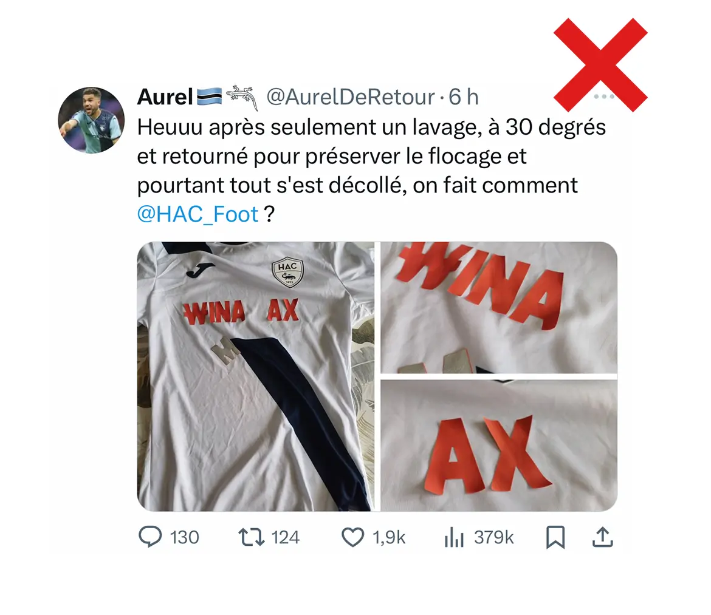
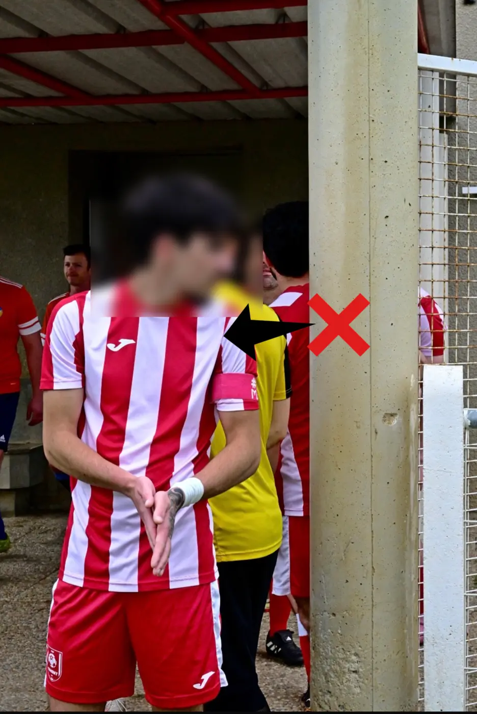

FLOCAGE AJOUTÉUne couche peut se décoller
Selon le textile, la pose et l’entretien, un flocage peut se fissurer, se soulever ou se décoller au fil des lavages.
02 — Une personnalisation durable
En sublimation, les couleurs pénètrent directement dans les fibres du tissu. Logos, sponsors, numéros et motifs ne sont pas collés par-dessus : il n’y a donc aucune couche de flocage à craqueler ou à décoller.

Un élément thermocollé repose sur le textile. La sublimation, elle, colore le textile lui-même. Le rendu reste souple, léger et uniforme, même avec un design très travaillé.

FLOCAGE AJOUTÉSelon le textile, la pose et l’entretien, un flocage peut se fissurer, se soulever ou se décoller au fil des lavages.
SUBLIMATION INTÉGRÉELes logos, sponsors, numéros et motifs sont imprimés dans les fibres polyester : aucune surépaisseur, aucun bord à arracher.

La sublimation commence sur le patron du vêtement. Nous positionnons le design, les logos et les sponsors sur les différentes pièces avant leur découpe et leur assemblage, afin d’obtenir un rendu équilibré sur le produit fini.
Le textile conserve sa souplesse, son poids et sa respirabilité.
Motifs, couleurs, sponsors et numéros peuvent couvrir l’ensemble du maillot.
Le visuel ne peut pas se décoller comme un marquage ajouté sur la surface.
Les placements et marges de couture sont anticipés. De très légers écarts peuvent subsister sur certaines zones d’assemblage.